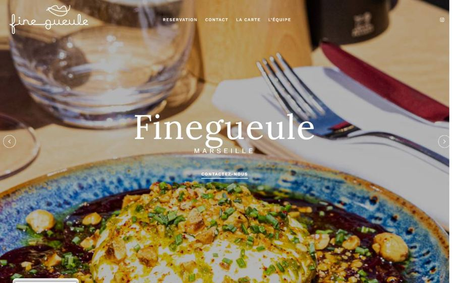
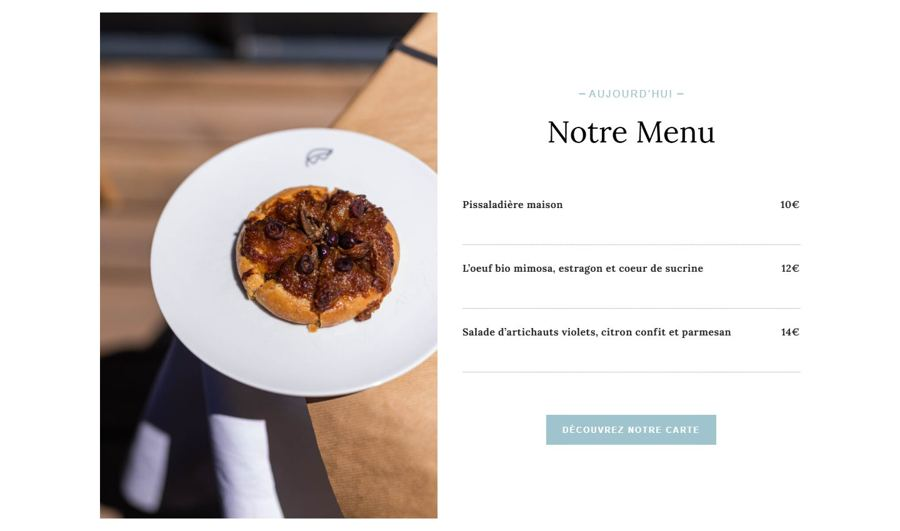

Fine Gueule — restaurant de bistronomie, Marseille
Site vitrine réalisé sous WordPress / Elementor pour Fine Gueule, restaurant du 8e arrondissement de Marseille : présentation du lieu, carte du jour, réservation en ligne et FAQ pratique, dans une ambiance chaleureuse et feutrée fidèle à l'adresse.
Voir le site → finegueulemarseille.fr
